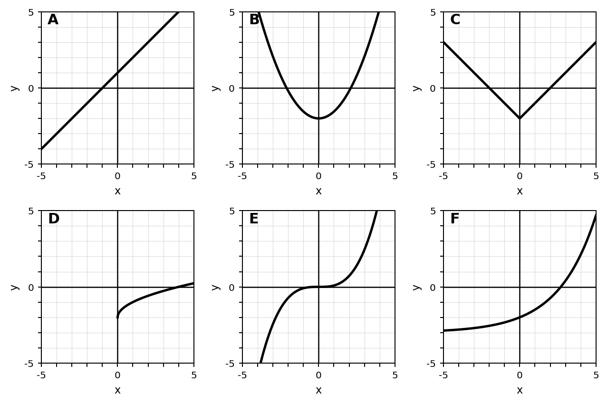
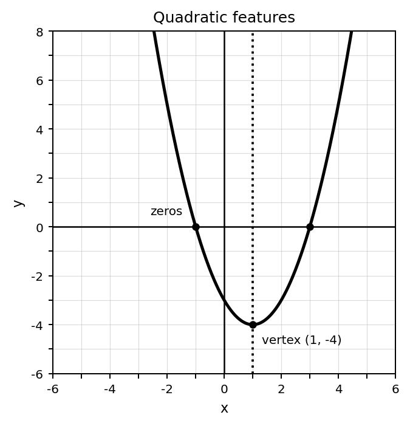
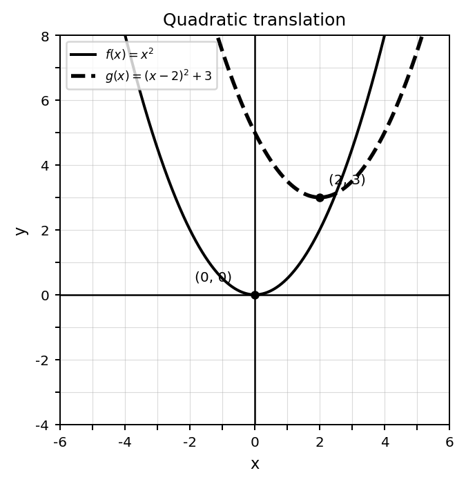
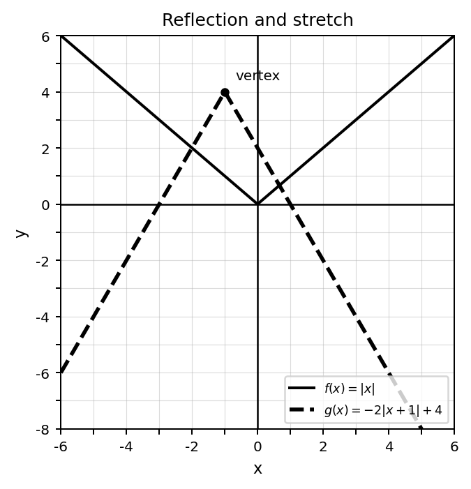
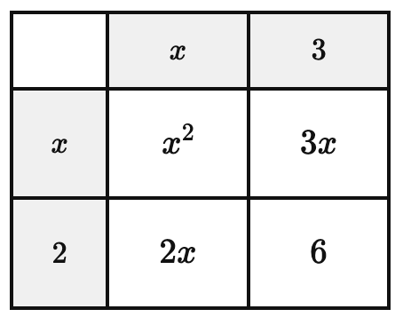
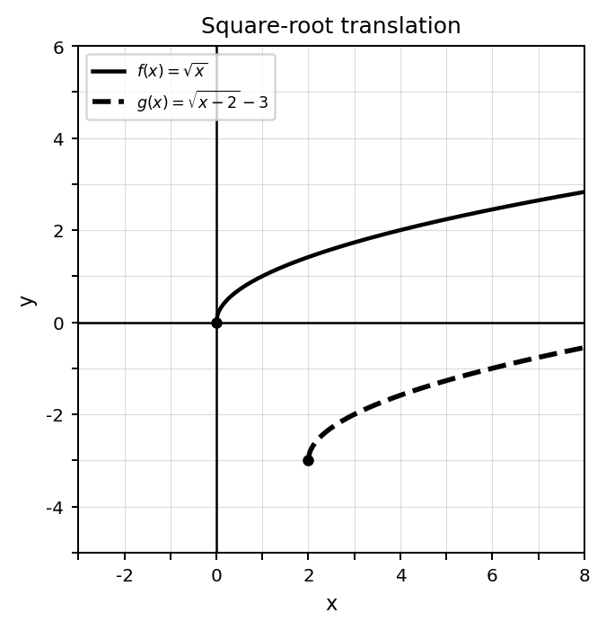
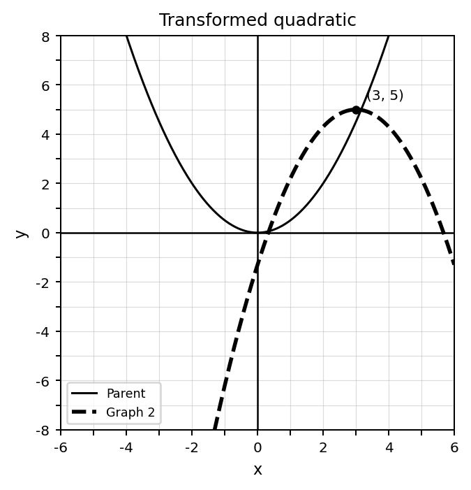

Students will analyze function families and transformations in order to identify key features, connect equations and graphs, and describe how parameters affect function behavior.
| Rung | I Can Statement | DOK | Level |
|---|---|---|---|
| 8 | I can analyze transformed functions and polynomial structures across graphs, equations, tables, and contexts, then justify conclusions about features and behavior. | DOK 4 | Above |
| 7 | I can create, compare, and revise models involving function families, transformations, and polynomial structures, then defend which representation best reveals important features. | DOK 4 | Above |
| 6 | I can analyze how transformations and polynomial structure affect graph behavior, key features, and equivalent forms. | DOK 3 | Essential |
| 5 | I can justify function-family classifications, transformation descriptions, and polynomial operations using evidence from multiple representations. | DOK 3 | Essential |
| 4 | I can graph translated and transformed functions and perform polynomial operations using symbolic and visual models. | DOK 2 | Essential |
| 3 | I can classify function families, identify basic transformations, and connect equations to graphs and tables. | DOK 2 | Essential |
| 2 | I can identify vocabulary, notation, and features for parent functions, transformations, polynomials, and quadratic graphs. | DOK 1 | Essential |
| 1 | I can recognize function families, polynomial expressions, area models, and basic graph features as representations of mathematical structure. | DOK 1 | Essential |
Format: 3–5 minute warm-up, vocabulary check, graph/equation identification, feature check, or exit ticket
Purpose: Check whether students can recognize parent functions, transformation vocabulary, polynomial vocabulary, and basic quadratic graph features.
Use the graph set below. Identify the family represented by Graph B.

Classify the equation as linear, quadratic, absolute value, square root, cubic, or exponential.
$$y=x^2+4$$
Which function family is usually represented by a V-shaped graph?
Which expression represents a vertical translation of $f(x)$ upward by 3 units?
Identify whether the equation suggests a horizontal or vertical shift.
$$g(x)=f(x-2)$$
Which transformation is suggested by multiplying the whole function by $-1$?
For the polynomial $4x^3-2x^2+7$, identify the degree.
Use the graph. Identify the vertex of the quadratic.

Format: Exit ticket, graphing task, matching task, mini-quiz, partner check, or short written task
Purpose: Check whether students can classify families, graph translations, identify transformation effects, perform polynomial operations, and connect quadratic equations to graphs.
Classify each equation by family.
Use the table to decide whether the relationship appears linear or quadratic. Explain briefly.
| $x$ | 0 | 1 | 2 | 3 |
|---|---|---|---|---|
| $y$ | 1 | 4 | 9 | 16 |
Describe the translation from the parent function to the transformed function.

Complete the table for $g(x)=(x-2)^2$.
| $x$ | 0 | 1 | 2 | 3 | 4 |
|---|---|---|---|---|---|
| $g(x)$ |
Describe the transformation shown.

Simplify.
$$(3x^2+4x-5)+(2x^2-x+7)$$
Multiply using distribution or an area model.
$$(x+3)(x+2)$$

Use the quadratic graph to identify the zeros, vertex, and axis of symmetry.
Format: Constructed response, representation analysis, strategy comparison, error analysis, or discourse prompt
Purpose: Check whether students can justify classifications, explain transformation effects, analyze polynomial structure, and connect equivalent expressions to graph behavior.
A student says, “All curved graphs are quadratic.” Respond with two counterexamples and explain.
Explain how a table can help distinguish a linear function from a quadratic function. Use an example.
A student says $g(x)=f(x-3)$ moves the graph left 3 because of the minus sign. Critique the reasoning and correct it.
Use the graph pair to explain what stays the same and what changes under a translation.

A student says $2f(x)$ and $f(x)+2$ do the same thing because both use 2. Explain the misconception.
Explain why $(x+3)(x+2)$ and $x^2+5x+6$ are equivalent. Use the area model or algebra.
A student expands $(x+4)^2$ as $x^2+16$. Identify the error and correct the expression.
Use the graph to connect the zeros, vertex, and equation structure of the quadratic.
Format: Brief performance task, modeling task, critique-and-revise task, design task, or extended application
Purpose: Check whether students can transfer function-family, transformation, and polynomial-structure reasoning to unfamiliar situations and justify model choices.
Design a “Which Family Does Not Belong?” task using four equations or graphs. Identify the mismatch and justify it.
Design a translated quadratic function whose vertex is in Quadrant II. Provide an equation, a rough graph, and an explanation.
Use the graph below to design a possible equation for Graph 2 and explain your reasoning.

Design a transformed function that includes a reflection, vertical scale change, and translation. Explain how each part appears in the graph.
Create a geometric or contextual model that could be represented by a polynomial expression. Define the expression and explain each term.
Create two equivalent polynomial expressions that look different. Explain how a student could prove they are equivalent.
Critique the statement: “Function families are just shapes to memorize.” Use at least two representations in your response.
Create a short student mistake involving horizontal and vertical translations. Then write feedback that would help correct the misconception.